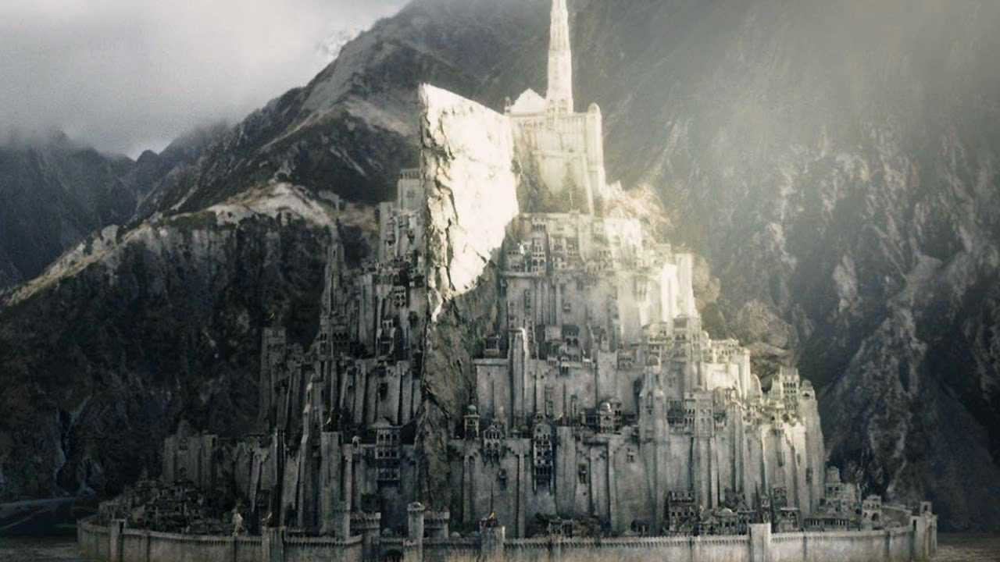

Rohan and Gondor

Rohan was a Mannish kingdom on the northern borders of Gondor.
It was the territory of the Rohirrim, a people of herdsmen and farmers.
Well-known for their horses and cavalry, they were Gondor's most important ally.
Gondor was the South Kingdom of the Númenóreans in Middle-earth, established soon after the downfall of Númenor by Isildur and his brother Anárion.
Their father Elendil, who ruled the North Kingdom Arnor, held the overlordship of the realm, however.
Though it waned in power over time and the line of its Kings failed, Gondor survived to the end of the Third Age, and had an instrumental role in the War of the Ring
The alliance between Rohan and Gondor came into existence in the year 2510 of the Third Age.
In that year the Easterlings launched a massive invasion of Gondor.
The army of Gondor was defeated and trapped between the Limlight and the Celebrant.
Gondor, which had always been on friendly terms with the different tribes of the Northmen, sent messengers to the closest tribe, the Éothéod.
Although it was unlikely that the message calling for aid would come through, it did.
the formed Alliance of fought a great battle on the plain of Dagorlad north of Mordor.
The armies of Elendil and Gil-galad were victorious, and entered Mordor itself, where they laid a siege on Sauron's Tower of Barad-dûr for seven years.
During this time, Anárion was killed by a rock thrown from the Tower that broke his helm.
The siege ended when Sauron himself emerged from Barad-dûr to fight the Alliance.
Gil-galad and Elendil attacked and destroyed Sauron, though they themselves were slain the process.
During the War of the Ring, Gondor was the strongest of the free nations that opposed Sauron, and thus, its defeat was his primary strategic goal in the war.
Gondor faced an all out attack on its capital Minas Tirith in the Battle of the Pelennor Fields.
Although nearly defeated, the Rohirrim once again turned the tide of battle, and helped win the war, though with heavy losses.
The combined army of the West then carried the battle to Sauron at the Battle of the Morannon, a feint to distract Sauron's attention from Frodo Baggins's quest to destroy the One Ring in Mount Doom, thus causing Sauron's destruction and the allies' ultimate victory.